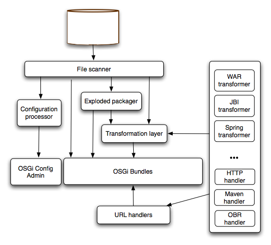

4.4. Deployer
The following picture describes the architecture of the deployer.

Spring deployer
Karaf includes a deployer that is able to deploy plain spring / spring-dm configuration files.
The deployer will transform on the fly any spring configuration file dropped into the deploy folder into a valid OSGi bundle.
The generated OSGi manifest will contain the following headers:
Manifest-Version: 2 Bundle-SymbolicName: [name of the file] Bundle-Version: [version of the file] Spring-Context: *;publish-context:=false;create-asynchronously:=true Import-Package: [required packages] DynamicImport-Package: *
The name and version of the file are extracted using a heuristic that will match common patterns. For example my-config-1.0.1.xml will lead to name = my-config and version = 1.0.1.
The default imported packages are extracted from the spring file definition and includes all classes referenced directly.
If you need to customize the generated manifest, you can do so by including an xml element in your spring configuration:
<spring:beans ...> <manifest> Require-Bundle= my-bundle </manifest>
Features deployer
To be able to hot deploy features from the deploy folder, you can just drop a feature descriptor on that folder. A bundle will be created and its installation (automatic) will trigger the installation of all features contained in the descriptor. Removing the file from the deploy folder will uninstall the features.
If you want to install a single feature, you can do so by writing a feature descriptor like the following:
<features> <repository>mvn:org.apache.servicemix.nmr/apache-servicemix-nmr/1.0.0/xml/features</repository> <feature name="nmr-only"> <feature>nmr</feature> </feature> </features>
For more informations about features, see the provisioning section.